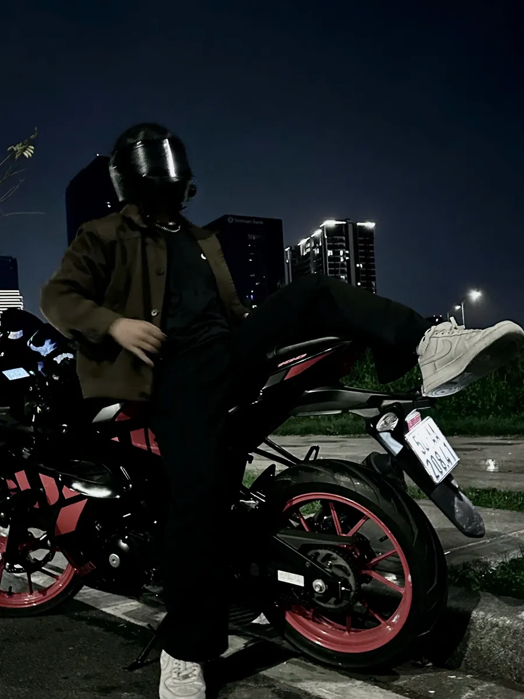
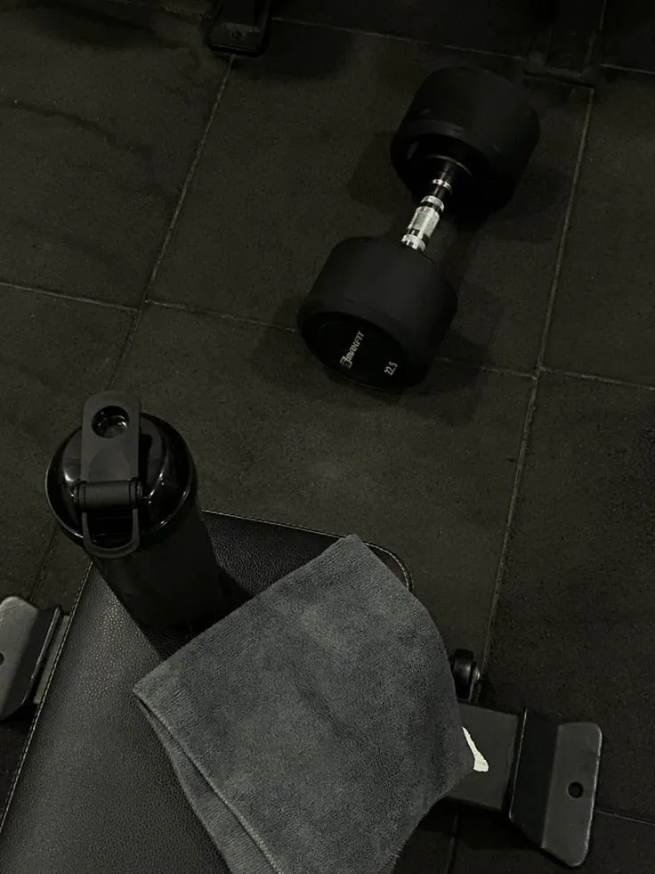

The CoreIdentity.
Stoic
Logic.
Grounding every action—from debugging complex architectures to interpreting life's chaos—in the rigid principles of Stoicism. The mind is a compiler. It reads the raw inputs of reality, strips away the noise of emotion, and executes only the necessary logic.


Dark Minimal.
A preference for oversized silhouettes, earth tones, and unbranded functional pieces. Fashion is not a display, but a sharp, consistent visual language in everyday wear.
Iron & Ritual.
Physical health dictates mental acuity. A rigid structure of cutting phases, protein tracking, and consistency in the weight room is non-negotiable. The iron never lies; it is the truest metric of discipline.

Details & Motion.
Whether navigating the pulse of the city after hours on a custom ride, or appreciating the intricate mechanics of a modified timepiece—true sophistication always lies in the unseen details.